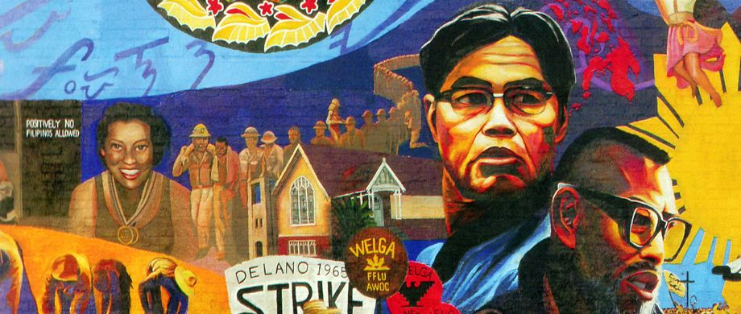

Born in 1904 in the barrio of Saoang, Ilocos Sur, Philip Vera Cruz was part of the generation of the early Filipino American pioneers who arrived in the United States in the 1920s and early 1930s when the Philippines was still under American colonial rule. In the first several years that Vera Cruz was in the U.S., the bulk of his time was devoted to "surviving" through regular labor migration and sending remittances back home to the Philippines to aid in the support of his family.
Vera Cruz turned to union work as an outlet to do something meaningful for himself as well as for his fellow workers. He was a veteran of different strikes, including a major asparagus strike in the Stockton area. Toward the end of the 1950s, he became a member of the National Farm Labor Union, and even was a president of the Delano local.
In the years of striking that would ensue, Filipino American laborers would work regularly with Chicano laborers in political struggles. Because Chicanos were the dominant group of workers in the fields, they had several decades of experience in dealing with California agribusiness, with a long history of resistance in the fields. They brought a wealth of knowledge and experience to the labor struggle, and it is impossible to fully understand the labor situation of Filipino American agricultural workers without placing it in the context of the history of Chicano agricultural workers. This said, however, it is also crucial to point there were differences in their experience.
On September 16, 1965, eight days after the walkout began, the three year old National Farm Workers Association (NFWA) decided to support the Agricultural Workers Organizing Committee strike. Three days later, the NFWA and the AWOC created a joint strike committee in Delano. The AWOC strike in Coachella was successful, although Vera Cruz called it "in retrospect a half-victory." While the workers won more pay, they did not secure a contract, and so their union was not fully recognized by the growers.
The movement should be the most important thing. If the leader becomes the most important part of the movement, then you won’t have a movement after the leader is gone. The movement must go beyond its leaders.
The events that Vera Cruz witnessed took place in an ever-widening arena of struggle. In July 1968, a national boycott for California table grapes as a whole was started, which grew to an international scale, with special attention directed to the Philippines, which ranked third in terms of the importation of grapes. By June 1970, with added pressure from the international boycott campaign, the union was able to claim contracts for about six million cartons of grapes in Arizona and California, with control over twenty percent of the crops in the Delano vicinity, sixty percent in Arvin, and sixty-five percent in Coachella valley.
One of the most significant aspects of the union was its organization across race. Analyzing this coalition of agricultural laborers in the UFW over a period of twenty years, roughly from 1959 when the AWOC was first established to the end of the 1970s after César Chávez's trips to Mexico and the Philippines, enables us to chart a critical time in the formation of the union, a time when great changes in the American culture would be reflected in the union's history.
In 1987, Vera Cruz traveled back to his home country for the first time in 50 years to accept the Ninoy Aquino Award. He was awarded with this honor because of his involvement in the advancement of the Filipino population.